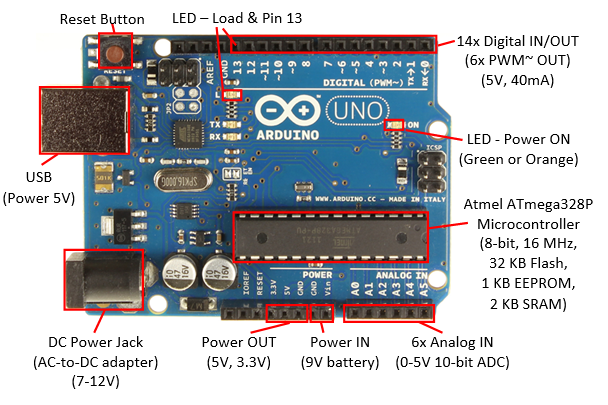
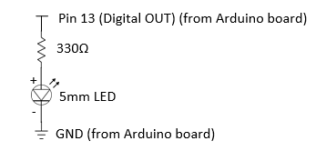
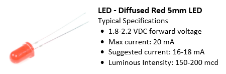
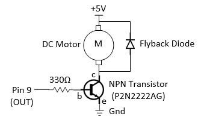
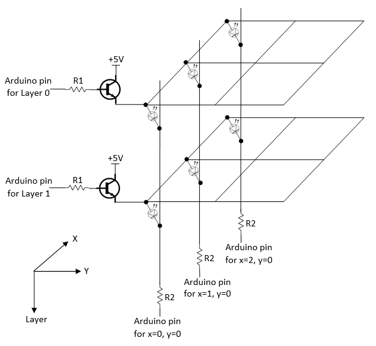

Introduction
"Arduino is an open-source electronics prototyping platform based on flexible, easy-to-use hardware and software. It is intended for artists, designers, hobbyists, and anyone interested in creating interactive objects or environments."
The mother site for Arduino is http://arduino.cc.
Getting Started
Step 0: Buy an Arduino Board
A minimal "Arduino UNO" board for starter costs less than US$30 and can be purchased thru many online stores (Refer to http://arduino.cc/en/Main/Buy).
An Arduino UNO board contains the following (as illustrated):
- Atmel ATmega328P 8-bit Microcontroller (datasheet), with 32KB of Flash memory for application programs, 2KB of SRAM, and 1KB of EEPROM for non-volatile data. The clock speed is 16MHz.
- USB Port: to communicate to the computer; also double as the power supply.
- Power IN: The power can be supplied either from USB connector (5V), DC power jack (7-12V via AC-to-DC adapter), or VIN/Ground PIN (7-12V via 9V battery).
- Power OUT: The board output regulated 5V and 3.3V (50mA) for powering external components.
- 14x Digital INPUT/OUTPUT pins (numbered from 0 to 13):
- Use function
pinMode(pinNumber, INPUT|OUTPUT)to configure the pin for input or output; anddigitalRead(pinNumber)ordigitalWrite(pinNumber, value)to read or write. - Each pin operates at 5V, and can provide or receive a maximum of 40mA.
- Pin 13: There is a built-in LED connected to Pin 13, as illustrated in the above diagram.
- PWM output: 6 of the pins (pins 3, 5, 6, 9, 10 and 11, marked by ~) can produce PWM (Pulse Width Modulated) output via function
analogWrite(pinNumber, dutyCycle)with duty cycle between 0 (off) to 255 (on). The PWM square wave at various duty cycles can be used to simulate "analog" output (e.g., to control the brightness of LED or speed of motor). The frequency of PWM is 980Hz on pins 5 and 6; and 490Hz for other pins.
- Use function
- 6x Analog INPUT pins (A0 to A5): By default, each pin can measure
between 0 to 5V with 10-bit of resolution. The upper range can be
changed using the AREF pin and
analogReference()function.
Step 1: Download the Arduino Development Software
- From Arduino download @ http://arduino.cc/en/Main/Software, choose the version that matches your operating platform (e.g., Windows) and download the zip file (e.g.,
arduino-1.0.5-windows.zip). - Unzip the downloaded file into a directory of your choice (e.g., "
D:\bin"). The Arduino Development Kit will be unzipped into "D:\bin\arduino-1.0.5". I shall denote the installed directory as$ARDUINO_HOMEin this article. Arduino SDK is "arduino.exe". Many program examples are provided in the "examples" directory.
Step 2: Plug-in the Arduino Board to Install the Driver
- Plug in the Arduino board with the USB cable to the computer. You shall see the "ON" LED lights up (in green or orange).
- Install the driver. Run "Control Panel" ⇒ "Device Manager" ⇒ Look
for and right-click on the "Unknown device" ⇒ "Update Device Driver" ⇒
Set to
$ARDUINO_HOME\drivers(i.e., the unzipped Arduino directory). Ignore the warning message. The device shall be installed as "Arduino UNO R3" under Ports (COM & LPT).
Step 3: Launch the Arduino SDK to Write your First Program
- Run "
arduino.exe" (at$ARDUINO_HOME). - Copy the following program (called sketch in Arduino) into the editor panel:
int ledPin = 13; // LED connected to digital pin 13 /* Setup() runs only once */ void setup() { pinMode(ledPin, OUTPUT); // Set pin 13 (digital) to OUTPUT mode } /* loop() repeats forever */ void loop() { digitalWrite(ledPin, HIGH); // Set pin 13 to HIGH (5V) to turn on the pin 13's built-in LED delay(1000); // ON time delay in msec digitalWrite(ledPin, LOW); // Set pin 13 to LOW (0V) to turn off the pin 13's built-in LED delay(1000); // OFF time delay in msec }
- Click "Verify" button (or "Sketch" menu ⇒ "Verify/Compile"; or Ctrl-R) to compile the code.
- Click "Upload" button (or "File" menu ⇒ "Upload"; or Ctrl-U) to
upload the code onto the Arduino board. You should see a small light
beside Pin 13 blinking (in orange).
If you see the error message "avrdude: stk500_getsync(): not in sync: resp=0x30". Start "Device Manager" (under "Control Panel"), take note of the COM port setting for "Arduino UNO", such as COM1, COM3 or COM6. Go to Arduino's menu "Tool" ⇒ "Serial Port" ⇒ "COMx" where x corresponds to the COM port setting reflected in the device manager.
Dissecting the Program
- An arduino program (called sketch) has these two functions:
setup()which runs once for initialization tasks, andloop()which runs in circles. - The
pinMode(pinNumber, INPUT|OUTPUT)function sets thepinNumberto eitherINPUTorOUTPUT. - The
digitalWrite(pinNumber, HIHG|LOW)function sets the digital output pin to eitherHIGH(5V) orLOW(0V). A digital output pin can provide a maximum current of 40mA.
Exercises
I shall follow the exercises in:
- "Oomlout's Arduino Experimentation Kit (ARDX)" @ http://www.oomlout.com/oom.php under "Products" ⇒ "ARDX".
- "SparkFun Inventor's Kit for Arduino" @ https://www.sparkfun.com/products/retired/11227, with User's Guide @ http://cdn.sparkfun.com/datasheets/Kits/SFE03-0012-SIK.Guide-300dpi-01.pdf.
but provide more technical explanation and computation for my engineering students. You need the hardware components to do these exercises. You can purchase the "SparkFun Inventor's Kit for Arduino"; or "Arduino Starter Kit"; or individual components.
Equipment - MUST Have
- Digital Multimeter (you can buy a cheap multimeter for less than $30)
- Soldering Kit (or Soldering Station)
Equipment - Nice to Have
- DC Power Supply (e.g., 160W Digital Bench Power Supply, 0 to 32V DC, 0 to 5A).
Equipment - Really Nice to Have
- Oscilloscope
- Function Generator
Exercise 1: Blinking LED (with Current Limiting Resistor)
Reference: "CIRC01 Getting Started" @ http://www.oomlout.com/oom.php/products/ardx/circ-01.
The objective is to turn ON and OFF a LED repeatably.
Components
- 1x LED (Basic 5mm Red or Green) (sample datasheet). LED has polarity. The shorter leg with a flat spot is the cathode (-). The longer leg is the anode (+).
- 1x 330Ω resistor
Circuit Diagram
Program
Run the program in the "Getting Started" section; or "$ARDUINO_HOME\examples\01.Basics\Blink\Blink.ino".
The program initializes (in setup()) by setting pin 13 to OUTPUT mode (via pinMode()), which could output a HIGH (5V) or LOW (0V). It then outputs a HIGH (5V), delays for 1000 msec (1 sec), outputs a LOW (0V), delays for 1000 msec, repeatably (in loop()).
Dissecting the Circuit
The brightness of an LED is directly dependent on how much current flowing through it. The more the current, the brighter the LED will be. However, high current drains battery power; and excessive current burns the LED. The suggested current for a typical 5mm LED is 15mA (max 20mA). A resistor is needed to limit the current flowing through the LED, with typical value of 330Ω for a 5V source. Using Ohm's law and ignoring the voltage drop across the LED, 5V/330Ω = 15mA (see LED Tutorial).
The digital pin 13 outputs 5V when it is set to HIGH. A typical 5mm LED (see datasheet) has a forward voltage of 1.8V to 2.2V, with suggested current 16-18mA. With a 330Ω resistor (in the above circuit), the forward current = (5V-2.0V)/330Ω = 9mA. To get 16mA at 2.0V, the resistor shall be (5V-2.0V)/16mA = 188Ω.
Take note that the digital output pins provide a maximum current of 40mA, which is sufficient to drive one LED but not multiple (>3) LEDs concurrently.
Practice
Set pin 13 to HIGH (to turn on the LED):
- Using a digital multimeter, measure the voltage at pin 13 and the voltage across the LED.
- Apply Ohm's law to compute the current flowing through the resistor (this same current flowing through the LED). Using a multimeter, measure this current and compare with the computed value.
Set pin 13 to LOW (to turn off the LED). Repeat the above.
More Exercise 1: Change the Blinking Time
To change the blinking rate, you can modify the delay, currently set at 1000 msec (or 1 sec).
More Exercise 2: Controlling the Brightness of LED
To control the brightness of the LED, use pin 9 (instead of pin 13),
which can produce a PWM (Pulse Width Modulation) square wave via
function analogWrite(pinNumber, dutyCycle) (PWM Tutorial). The dutyCycle sets the ON duration of the square wave, with value ranges from 0 (always OFF) to 255 (always ON).
Try the following program:
int ledPin = 9; // LED connected to digital pin 9 /* Setup() runs only once */ void setup() { pinMode(ledPin, OUTPUT); // Set to OUTPUT mode } /* loop() repeats forever */ void loop() { analogWrite(ledPin, 192); // Set to 192 for 75% // Try other values from 0 to 255 delay(1000); // time delay in msec before repeat }
The brightness of the LED is proportional to the duty cycle (ON duration). For example, if the value of duty cycle is 64, the LED is 25% of the full brightness.
More Exercise 3: Fading LED
Use pin 9 again, and run the program in "$ARDUINO_HOME\examples\03.Analog\Fading\Fading.ino". Study the program. Also run and study "$ARDUINO_HOME\examples\01.Basics\Fade\Fade.ino".
Exercise 2: Multiple LEDs
Follow "CIRC02 8 LEDs Fun" @ http://www.oomlout.com/oom.php/products/ardx/circ-02.
Exercise 3: DC Motor and Transistor (for driving larger load)
Follow "CIRC03 Spin Motor Spin" @ http://www.oomlout.com/oom.php/products/ardx/circ-03.
Circuit Diagram
Dissecting the Circuit
A transistor (P2N2222AG NPN BJT, rated at 40V and 200mA max) (datasheet) is used as an electronic switch in the above circuit. It is turned ON when pin 9 (connected to the base (b) of transistor) outputs a HIGH (5V), with base current IB = (5V-0.8V)/330Ω = 13mA; and voltage drop across collector (c) and emitter (e) of 0.2V. It is OFF when pin 9 is LOW (0V).
A transistor is needed here as the output from pin 9 (with maximum current of 40mA) is not sufficient to drive the DC motor directly. But only a small amount of current (2mA) is required to turn on the transistor.
A DC motor spins at a rate proportional to the applied voltage (once sufficient voltage is applied) at no load. The speed decreases when load is applied. The current is also proportional to the torque. (See DC Motor Tutorials.)
DC motors have various specifications. A toy DC motor has an operating voltage range of 1.5 to 4.5V and a no load speed of 23000 RPM (@4.5VDC, 70mA) (datasheet); another has an operating voltage range of 1.0 to 3.0V and a no load speed of 6600 RPM (@1.0V DC, 110mA) (datasheet). Generally, it requires around 100mA and cannot be supplied via output pin (max of 40mA). The transistor has a rating of 200mA.
Practice
Connect the DC motor directly to 5V. Measure the no load current.
Set pin 9 to HIGH (to turn on the transistor):
- Using a digital multimeter, measure the voltage at pin 9, the voltage across the base and emitter VBE. Compute the base current IB (through the base resistor).
- Measure the voltage across the collector and emitter VCE.
- Measure the collector current IC.
Exercise 4: Servo Motor
Follow "CIRC04 Servo" @ http://www.oomlout.com/oom.php/products/ardx/circ-04.
Dissecting the Circuit
A servo motor (sample datasheet) is a rotary actuator that allows for precise control of angular position, velocity and acceleration.
Exercise 5: Shift Register
Follow "CIRC05 Shift Register" @ http://www.oomlout.com/oom.php/products/ardx/circ-05.
Exercise 6: Piezo Speaker
Follow "CIRC06 Piezo speaker" @ http://www.oomlout.com/oom.php/products/ardx/circ-06.
Exercise 7: Push Button
Follow "CIRC07 Push Button" @ http://www.oomlout.com/oom.php/products/ardx/circ-07.
Exercise 8: Potentialmeter
Follow "CIRC08 Potentialmeter" @ http://www.oomlout.com/oom.php/products/ardx/circ-08.
Practice
Use a multimeter, measure the resistance across the entire potentiometer. (Mine is 10 kΩ).
Exercise 9: Photo-Resistor
Follow "CIRC09 Photo-Resistor" @ http://www.oomlout.com/oom.php/products/ardx/circ-09.
Practice
Use a multimeter, measure the resistance of the photo-resistor at darkness (by covering the surface) and at full brightness (shine light on it). (Darkness: 60 kΩ; brightness: 3 kΩ).
Exercise 10: Temperature Sensor
Follow "CIRC10 Precision Temperature Sensor" @ http://www.oomlout.com/oom.php/products/ardx/circ-10.
Exercise 11: Relay (for large load)
Follow "CIRC11 Larger Load Relay" @ http://www.oomlout.com/oom.php/products/ardx/circ-11.
Debugging Arduino Programs
Serial.println()|print()|write()
You can use Serial.println(var) to print the value of a variable in human-readable ASCII texts, and capture the output in the "Serial Monitor" (under "tools" menu) of Arduino IDE.
Serial.println() appends a new line at the end of the output; while Serial.print() does not. Serial.write() writes a raw byte.
You need to include a Serial.open(9600) statement in the setup(), where 9600 is a typical serial transmission baud rate.
Atmel Studio
Atmel Studio is a free Arduino IDE, which you can set breakpoints and trace through the program. [TODO more]
Arduino Project - LED Cube
Circuit Diagram
Dissecting the Circuit Diagram
[TODO]
Program
[TODO]
Miscellaneous
Which Arduino Boards: You can check the specification of the various Arduino board @ http://arduino.cc/en/Products.Compare.
REFERENCES & RESOURCES
- Arduino mother site @ http://arduino.cc.
- Arduino github @ https://github.com/arduino/Arduino (source codes).
- Oomlout @ http://oomlout.com/oom.php (Arduino getting started tutorials).
- Sparkfun @ https://www.sparkfun.com (Electronic components with datasheets).
Online Electronic Components Store @ SG
- SGBotic @ http://www.sgbotic.com/.
- RS Components @ http://sg.rs-online.com/web/.